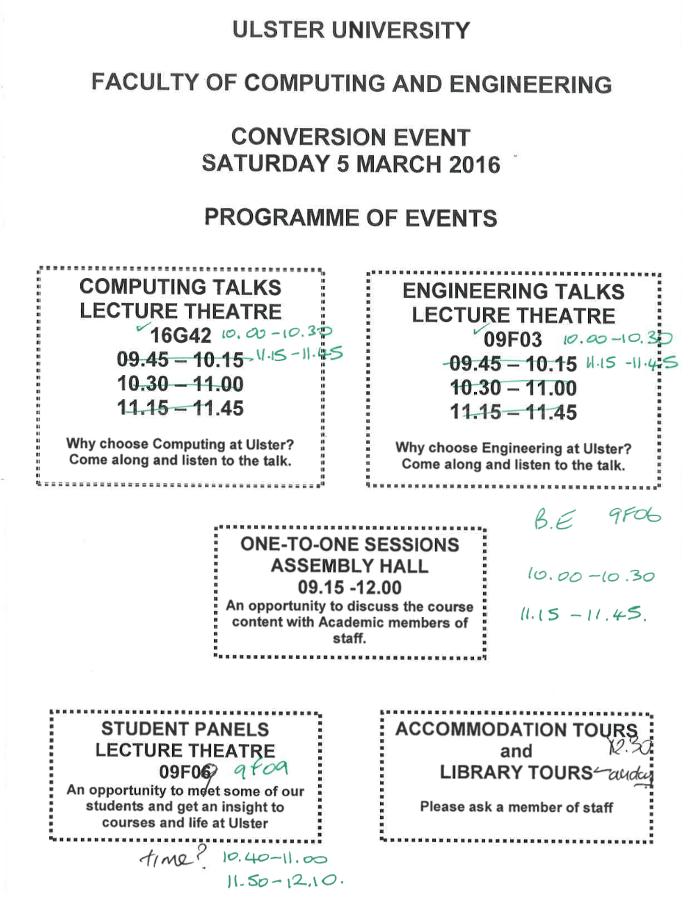
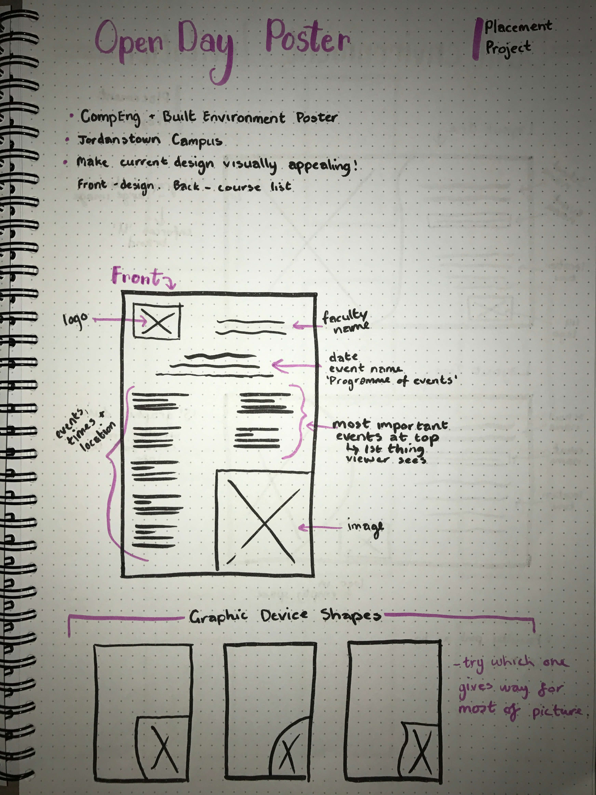
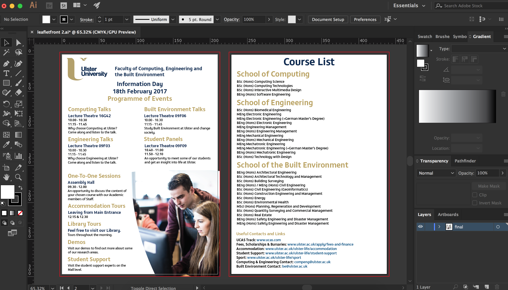
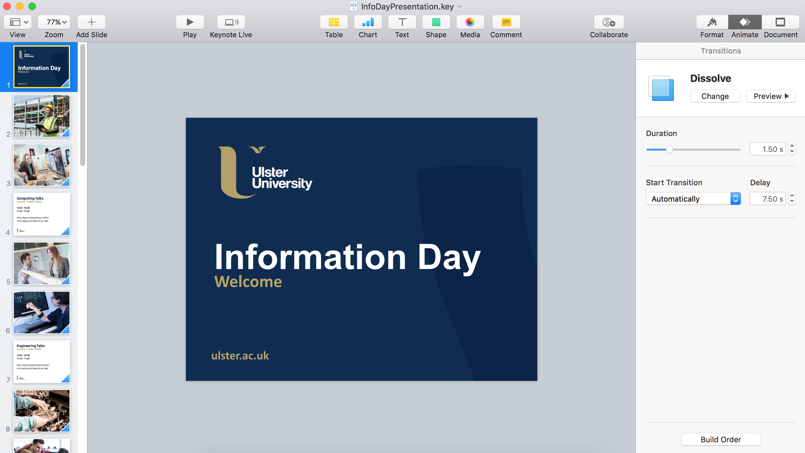
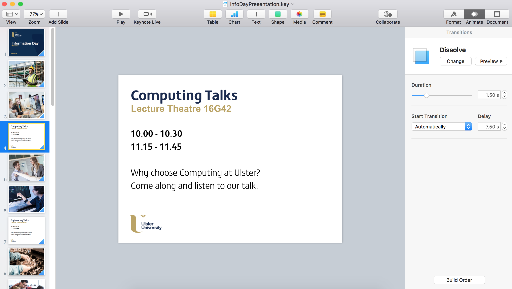

On Friday I was invited down to the Jordanstown campus to work closely with Julie on a leaflet and presentation for the Computing and Engineering Information Day which was happening the following weekend.
Starting off with the leaflet, I received an email with files which included the information I needed to have on it, including a scanned copy of the old leaflet with new times on it. Looking at the old leaflet was definitely a surprise; the design was something which the schools hadn't taken into consideration for previous years because they weren't advertising art/design courses, but after seeing the leaflet I created for the ADBE faculty open day they realised the importance of the design of the leaflet and how it needs to be engaging, not something which people fold up and stick in their pockets. Below is a scanned copy the original version I was emailed alongside my wireframes...
Designing this leaflet was quite challenging in terms of having a lot of information to fit onto an A4 page whilst keeping the design corporate. I stuck with the idea of the different sessions being in 'blocks' and utilised colour and font weight to differentiate between headings, times and descriptions.
I stuck with the corporate colour scheme because the faculties are undergoing merges and at the time of making this leaflet it wasn't clear what schools the faculty would consist of. This also lead me to the decision of referring to the different departments as schools, rather than separate faculties.
Throughout the designing process I had to change the layout quite a few times as new information was added in or information changed, but this was a good insight into what designing for a real client will be like - things change and as a designer it's my job to adapt my work to this.
You can see a PDF version of the leaflet by clicking here.
I had to create a presentation which would be projected onto the large screen in the Jordanstown Campus Assembly Hall. I chose to use Keynote to create it as I feel it is easier to use and gives more control than Microsoft Powerpoint. I didn't really get much freedom when it came to the design of the presentation as the University has a branded template which we were required to use.
I searched the Image Bank for images which I felt portrayed the spirit of the three schools and gave visitors a real insight into Ulster life. I added a soft 'dissolve' transition to the slides as they had to play automatically and I didn't want a harsh transition which would be distracting to the visitors, as this presentation was more of a background piece behind the course teams on the floor. When considering the timings I was able to get a little bit of user research in and ask the other women in the office to watch the presentation playing and see if they were able to read the information without having to rush through it. Using their feedback I was able to time the duration of the slides accordingly.
Even though I was just moving to another office for the day, I found myself feeling more motivated and creative. I put this down being in a new environment and being around different people. I think if there's one thing this placement has taught me it is that I thrive in creative spaces, rather than in a corporate office situation - even just getting up and walking around or swapping to a different desk or sitting area.
Placement Journal
Paige Boyd